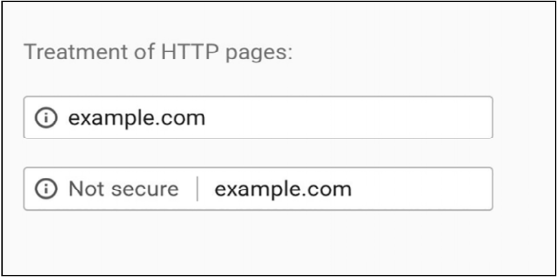

¿Qué hace inseguros a los sitios "No seguros"? HTTP vs HTTPS
Breve análisis de los riesgos que presenta navegar por sitios no seguros, 2 de noviembre 2020
Todo el mundo en algún momento notó el "http://" al principio de un link, pero no son tantos los que entienden su significado. El HyperText Transfer Protocol (HTTP) es un protocolo empleado para la transferencia de información entre un cliente y un servidor, entre usted y cualquier página web a la que acceda. Se basa en que un cliente realice una petición al servidor, y este le devuelva una respuesta, por ejemplo, la página a la que quiere acceder. Sin embargo, este protocolo de 1990 dejó de ser el estándar hace unos años, y ahora tomó su lugar el HyperText Transfer Protocol Secure (HTTPS).
La mayor diferencia entre estos dos es que el HTTPS encripta todos los datos durante la transmisión del cliente al servidor (y viceversa) y también, verifica la autenticidad de este último, te confirma que el servidor al que te conectaste es verdaderamente quien dice ser. Probablemente la mayor razón por la que se emplea el HTTPS en casi todos los sitios es por la influencia de Google y Firefox. Como lo explica Emily Schechter en una de sus conferencias, The trouble With URLs.
En el video se habla de cómo Google ha llevado a cabo numerosos proyectos para alcanzar la seguridad en línea, incluyendo el de “Safe Browsing”, liderado por ella. La medida más importante de este proyecto fue la de ocultar partes de la URL como el “https://” y reemplazarlo por el símbolo de un candado, para así evitar el exceso de información “ilegible” y mostrarla en su lugar de manera que todos la puedan entender. Sin embargo, en 2018 la empresa decidió sacar el candado verde porque muchos lo confundían con una cartera verde, y en vez de anunciar que un sitio era seguro, se optó por normalizar la seguridad, y en su lugar, anunciar cuando un sitio no cumplía los estándares de seguridad.
La relevancia de esto es que hoy en día, todos los HTTPS son considerados seguros mientras los HTTP inseguros, cuando esto no es necesariamente el caso. Para empezar, si bien es verdad que un sitio use HTTPS significa que su identidad está validada y toda la información que mandes se encripta hasta llegar al servidor, esto no significa que tengan buenas intenciones. La encriptación dificulta los ataques Man In The Middle, donde un tercero espía tu conversación con el servidor, leyendo todos los datos que mandas (incluidos usuario y contraseña cuando ingresas sesión). Pero esta información se desencripta cuando llega al servidor, y si este último quiere guardar tu información privada, puede hacerlo.
HTTP por el otro lado no es malicioso por naturaleza. Es cierto que no encripta tu información (o al menos no lo suficiente), pero esto no significa que tengan otras intenciones. El verdadero problema con HTTP es la cantidad de puertas que abre para que un atacante haga lo que le plazca, ya que no solo puede leer toda la información que se transmite, sino que también puede modificarla. Como explica Troy Hunt en el video debajo, un Man In The Middle (MITM) podría modificar la página que estás viendo, mostrarte otra página mientras te hace pensar que seguís en la misma, leer las cookies de tu navegador (lo que incluye poder iniciar sesión en otros sitios, haciéndose pasar por vos), cambiar la contraseña de administrador de tu proxy, usar el procesador de tu computadora para minar bitcoins y hasta ejecutar script en tu navegador para perjudicar a otras páginas que sí sean seguras, como el ataque que lanzó China para perjudicar a GitHub (China’s Great Cannon).
En retrospectiva, HTTPS es un protocolo que debería usarse en todos los casos, ya sea que se esté hablando de una página que maneja información sensible o no. Y, sin embargo, uno se sorprendería al ver la lista de sitios que 30 años después, todavía utilizan HTTP para establecer conexiones. Esta lista, disponible en WhyNoHttps.com, incluye paginas como: mercadolibre.com, afip.gob.ar y gov.cn, la página del gobierno chino. Si bien cabe destacar que estos sitios usan HTTPS para la mayoría de sus páginas, solo se necesita una que use HTTP para realizar cualquiera de los ataques mencionados anteriormente, y ese es el caso para los 3 links de arriba.
Índice
- Home
- Introducción
- Artículos
- Las contraseñas no son débiles, nosotros lo somos
- La verdad sobre los sitios "No seguros"
- Phishing, la verdadera amenaza al navegar por internet
- Man in the Middle y WiFi Pineapples
- "La rebelión de las máquinas" y ataques DDoS
- El anonimato y el negocio de la información
- Ataques de fuerza bruta y los diccionarios de contraseñas
- "Las (des)ventajas de ser invisible"
- El comportamiento humano y el anonimato
- Encuestas
- Conclusión
- Bibliografía